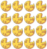
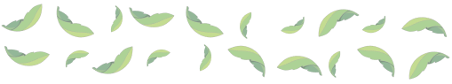

<div class="animated fadeIn delay-4 slower">
  <mat-sidenav-container style="height:100vh">
      <mat-sidenav mode="over" #sideMenu [(opened)]="openedMenu">
        <div style="display: flex; flex-direction: column; height: 100%; justify-content: space-between;">
            
            <div>
                <div class="user">
                    <div>
                        
                        <ng-template #defaultPicture>
                            
                        </ng-template>
                    </div>
                    <div class="user__name">
                        Usuario de prueba
                    </div>
                </div>
                <div style="padding-left: 24px; padding-right: 24px; margin-bottom: 16px;">
                    <mat-divider></mat-divider>
                </div>
                <div class="w3-center">
                    <mat-slide-toggle color="primary"
                        (click)="themeService.toggleTheme()">
                        Modo Oscuro
                    </mat-slide-toggle>
                </div>
                <!-- <h2 class="menu__title font--primary">menu</h2> -->
                <div class="menu">
                    <button mat-button class="w3-block menu__button" routerLink="products"
                        (click)="toggleSideMenu()">
                        <mat-icon class="menu__icon">local_offer</mat-icon>
                        Productos
                    </button>
                    <button mat-button class="w3-block menu__button" routerLink="products-history"
                        (click)="toggleSideMenu()">
                        <mat-icon class="menu__icon">history</mat-icon>
                        Historial
                    </button>
                    <button mat-button class="w3-block menu__button" routerLink="products-list"
                        (click)="toggleSideMenu()">
                        <mat-icon class="menu__icon">local_offer</mat-icon>
                        Lista de Productos
                    </button>
                    <p class="w3-margin-bottom"></p>
                    
                    <div class="w3-center">
                        <button mat-raised-button color="accent" (click)="login()">
                            <mat-icon style="margin-right: 5px;">account_circle</mat-icon>
                            Iniciar Sesión
                        </button>
                        <button *ngIf="auth.user$ | async" class="w3-margin-top" mat-raised-button color="accent" (click)="auth.logout()">
                            <mat-icon style="margin-right: 5px;">account_circle</mat-icon>
                            Cerrar Sesión
                        </button>
                    </div>
                </div>
            </div>


            <div class="meraki">
                <div style="text-align: center;">Desarrollado por
                    <a href="https://meraki-s.com" target="_blank">
                        
                    </a>
                </div>
            </div>

        </div>

      </mat-sidenav>

      <mat-sidenav-content cdkScrollable>
          <mat-toolbar class="main__toolbar">
              <div>
                  <button mat-icon-button (click)="toggleSideMenu()">
                      <mat-icon style="transform: scale(1.5);">menu</mat-icon>
                  </button>
                  <a class="w3-margin-left" routerLink="/main">
                      
                  </a>
              </div>
              <span style="flex: 1 1 auto;"></span>
              <!-- 
               -->
          </mat-toolbar>
          <div style="padding-top: 56px;">
              <router-outlet></router-outlet>
          </div>
      </mat-sidenav-content>

  </mat-sidenav-container>
</div>